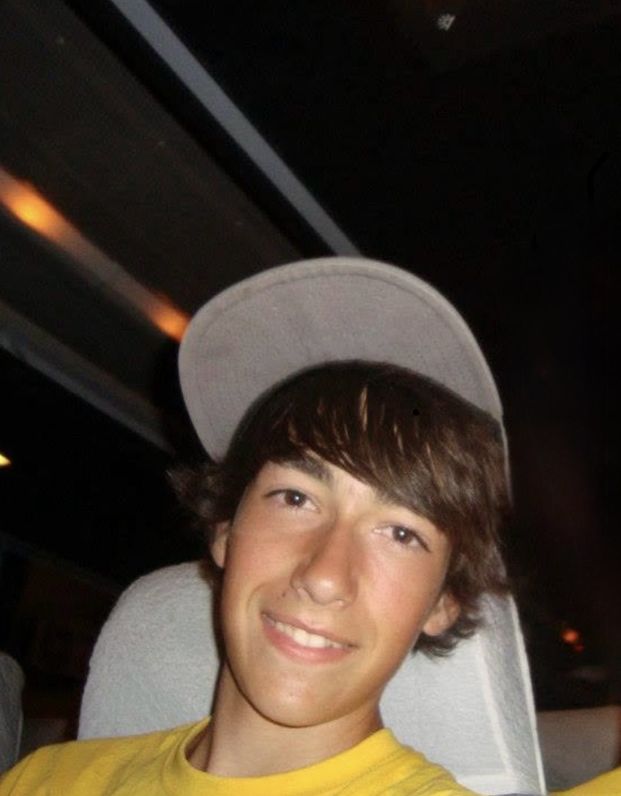
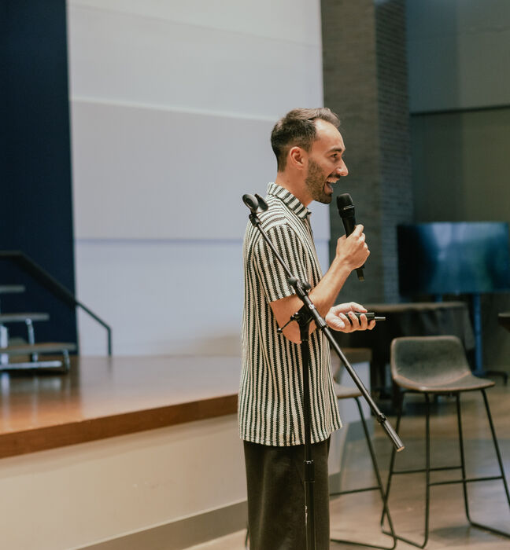
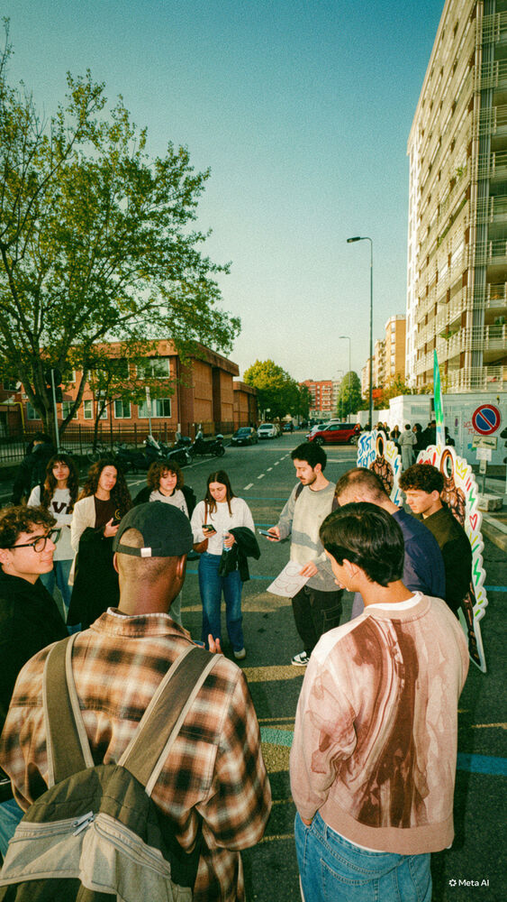

And got a burden to see people experience Jesus.


2025–26
I was selected as one of 11 initiatives for OneHope’s Catalyze Lab in the US.




I believe we’re just scratching the surface of what’s possible with digital evangelism.

Over the next months, I’ll be sharing what we’re building, what we’re learning, the stories, challenges and everything God is doing.